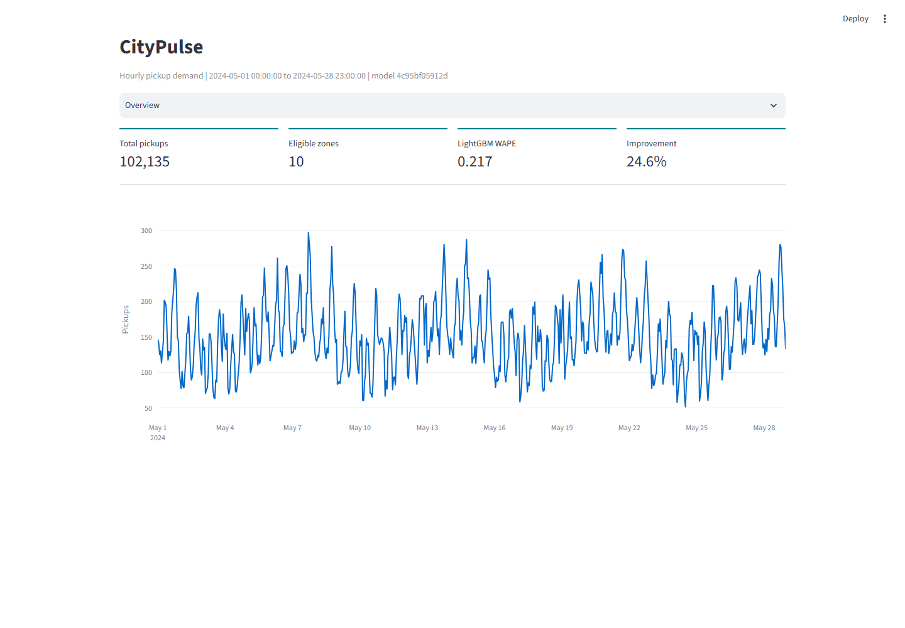
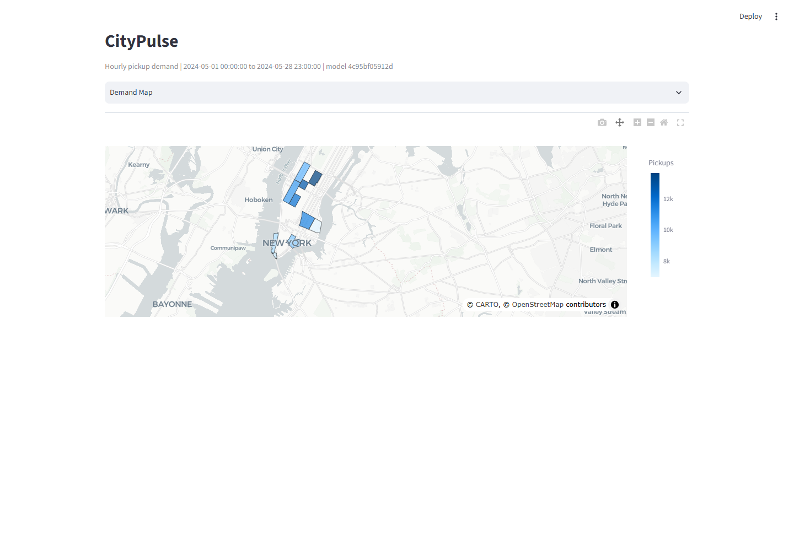

Ingestion
Monthly TLC Parquet and Open-Meteo weather include source URLs, schemas, rows, sizes, and SHA-256 checksums.
Data Science case study
A reproducible, local-first experiment for forecasting hourly Yellow Taxi pickups across official NYC TLC zones at horizons from one to twenty-four hours.
01 / Question
CityPulse turns public TLC pickup records into a complete zone-hour panel, then tests seasonal, Ridge, and LightGBM forecasts with chronological folds. The offline fixture proves the workflow without pretending that synthetic performance is a production claim.

02 / Pipeline
Monthly TLC Parquet and Open-Meteo weather include source URLs, schemas, rows, sizes, and SHA-256 checksums.
DuckDB aggregation fills every zone-hour pair, merges the repeated autumn hour, and flags DST transitions.
Lags, rolling statistics, calendar, holiday, borough, weather, zone, and direct horizon features share leakage tests.
Versioned dataset, metrics, forecast, and model contracts preserve eligibility, library versions, and provenance.
03 / Evaluation
Four expanding folds compare models with WAPE, MAE, RMSE, and sMAPE by city, zone, and horizon. Headline metrics exclude flagged DST hours. Prediction intervals use out-of-fold residuals separately for every horizon, and PSI compares recent feature distributions with training history.

04 / Fixture results
LightGBM out-of-fold WAPE.
Weekly seasonal baseline WAPE.
Relative WAPE improvement on the fixture.
Saved out-of-fold predictions.
The result clears the project's 5% success threshold, but it is intentionally labelled as fixture evidence. A six-month TLC run is required before claiming real NYC accuracy. SHAP describes model behavior and is not a causal explanation.
Status
The repository includes the CLI, Streamlit dashboard, executed notebook, autonomous report, data and model cards, privacy notes, schemas, CI, and a tested synthetic demo.